From consensus peaks to a count matrix, normalisation and DESeq2 for chromatin accessibility
ATAC-seq processing and peak calling ended with one set of peaks for all samples. Now we ask which of those regulatory elements are more open in one cell type (or condition) than in another. Most of the statistics is the DESeq2 you know from RNA-seq; this lecture spends its time on what is different.
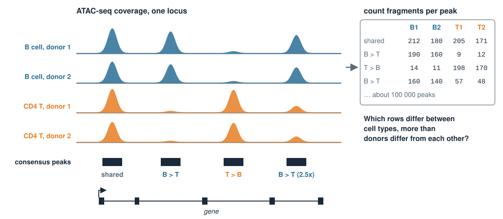
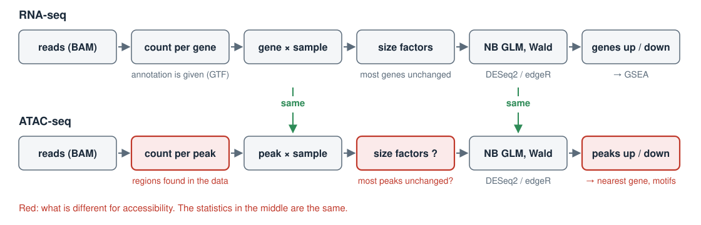
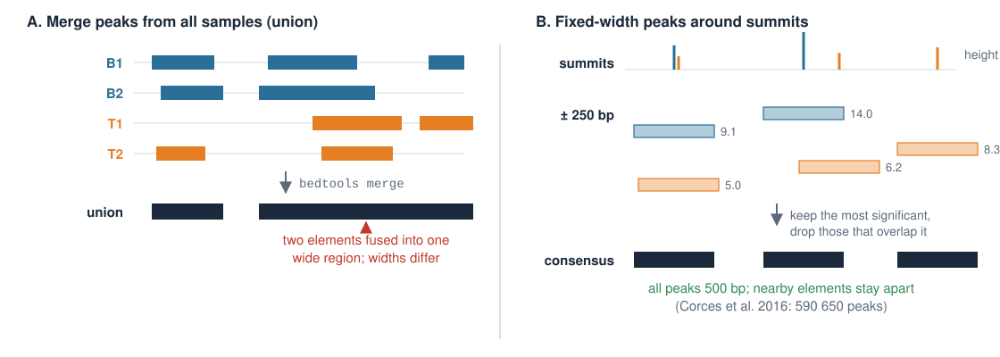
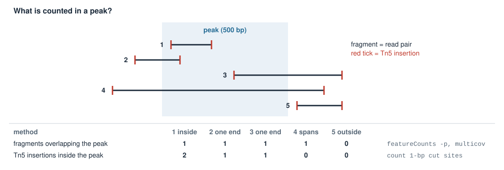
bedtools multicov) is the common default; counting insertions (fragment ends, shifted +4/−5) is more precise and what ArchR and chromVAR use.# consensus peaks (BED) -> SAF, the simple annotation format of featureCounts
awk 'BEGIN { OFS = "\t"; print "GeneID", "Chr", "Start", "End", "Strand" }
{ print "peak" NR, $1, $2 + 1, $3, "." }' consensus.bed > consensus.saf
# count fragments (read pairs) per peak, all samples at once
featureCounts -F SAF -a consensus.saf -p --countReadPairs -B -C \
-T 8 -o atac_counts.txt sample1.bam sample2.bam sample3.bam ...
# or, with bedtools: one column per BAM
bedtools multicov -bams sample1.bam sample2.bam -bed consensus.bed > atac_counts.bed-p --countReadPairs: count fragments, not reads. -B -C: both ends aligned, on the same chromosome.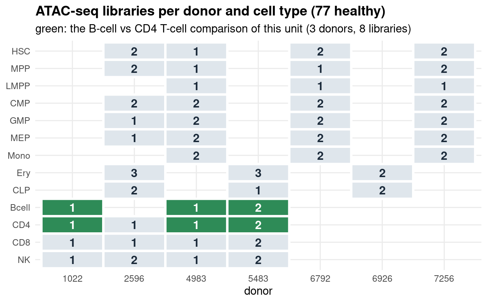
Donor4983-CD4-9A-150120 = donor 4983, CD4 T cells (code 9), library A, run date. Early samples are just 4983-7A (code 7 = monocytes): decode from the GEO sample table, never guess.gr19 <- GRanges(atac$Chr, IRanges(atac$Start + 1, atac$End)) # 0-based starts in the file
lo <- liftOver(gr19, import.chain("hg19ToHg38.over.chain")) # a GRangesList: 0, 1 or more pieces
table(lengths(lo))| result of liftOver | peaks |
|---|---|
| no match in GRCh38 (deleted or rearranged) | 159 |
| split into ≥ 2 pieces | 1 375 |
| one piece, but not 500 bp or a different chromosome | 46 |
| one piece, 500 bp: kept | 589 070 (99.7%) |
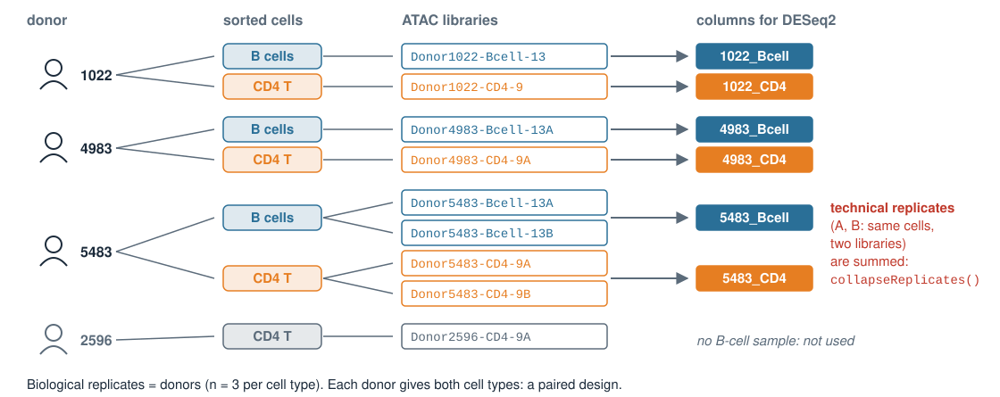
collapseReplicates), do not count them as extra samples.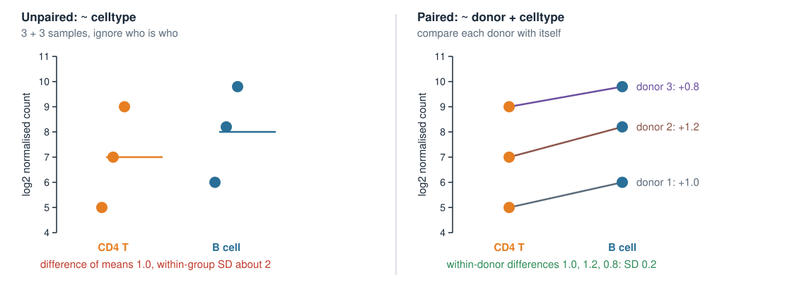
~ donor + celltype compares every donor with itself: the donor effect is removed, and the celltype coefficient is the within-donor log fold change.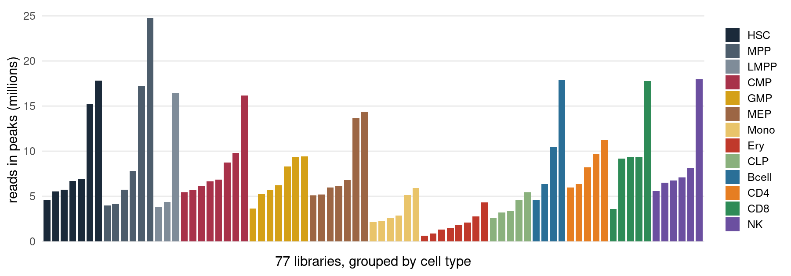
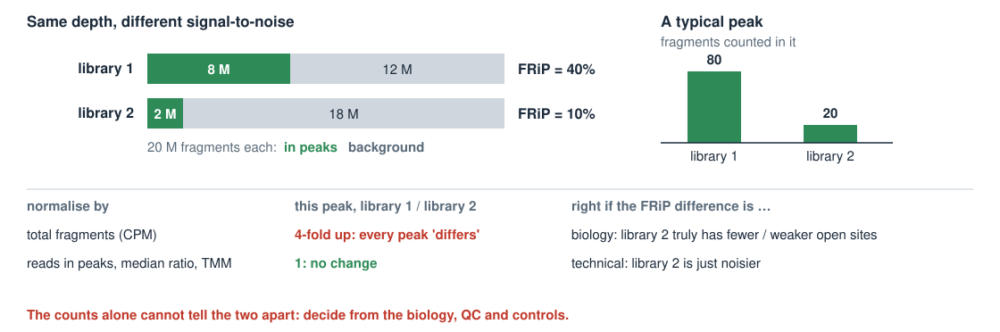
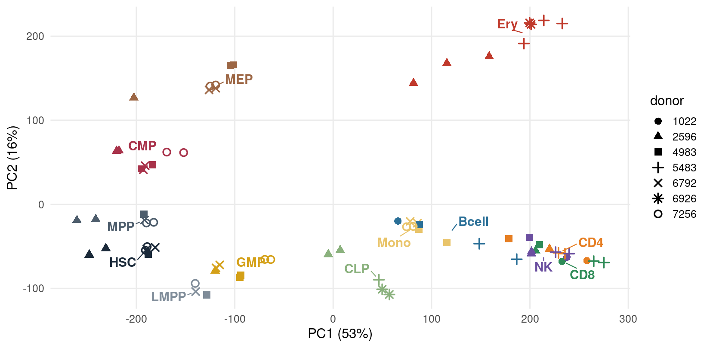
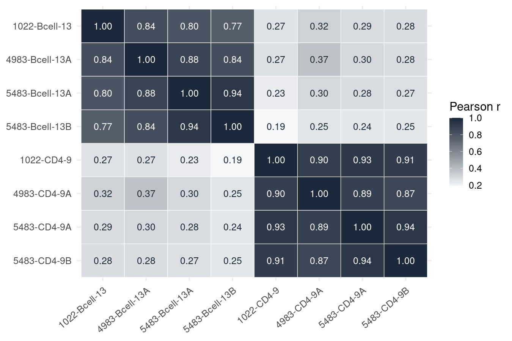
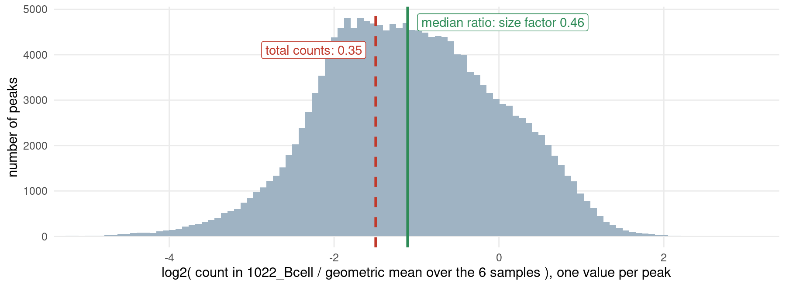
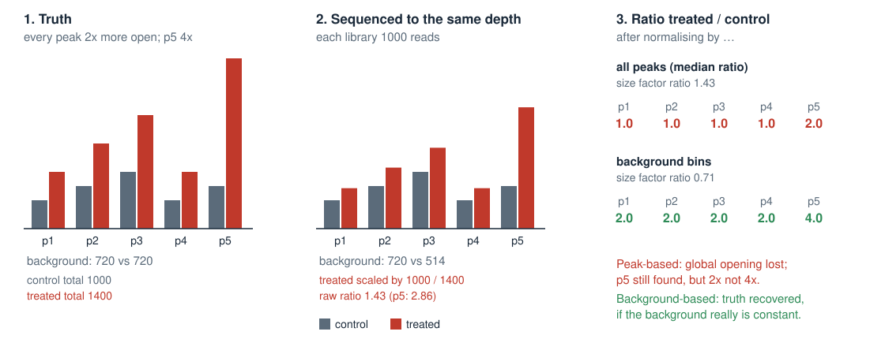
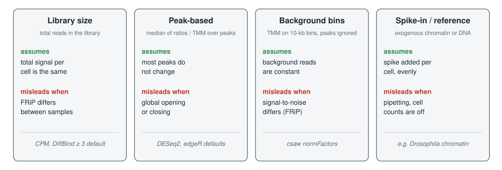
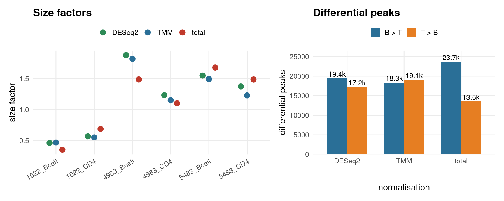
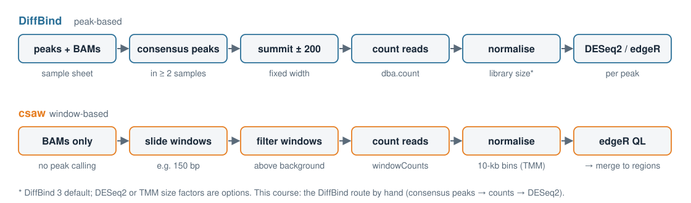
dds <- DESeqDataSet(se, design = ~ donor + celltype) # se: peaks x 8 libraries, rowRanges in hg38
dds <- collapseReplicates(dds, groupby = dds$unit) # 8 libraries -> 6 samples
dds <- dds[rowSums(counts(dds) >= 10) >= 3, ] # 211 824 of 589 070 peaks
dds <- DESeq(dds) # about 1 minute
res <- results(dds, name = "celltype_Bcell_vs_CD4", alpha = 0.05)
shr <- lfcShrink(dds, coef = "celltype_Bcell_vs_CD4", type = "apeglm") # about 2 minutescelltype levels CD4, Bcell: positive log2 fold change = more open in B cells.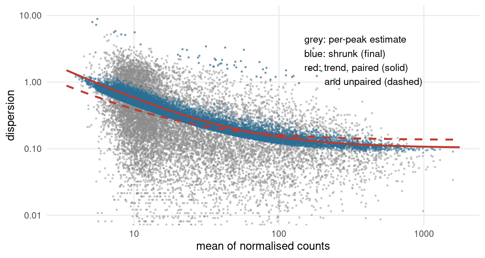
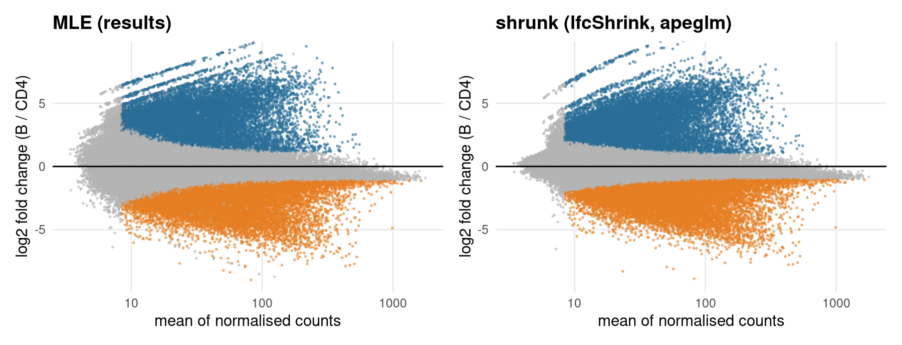
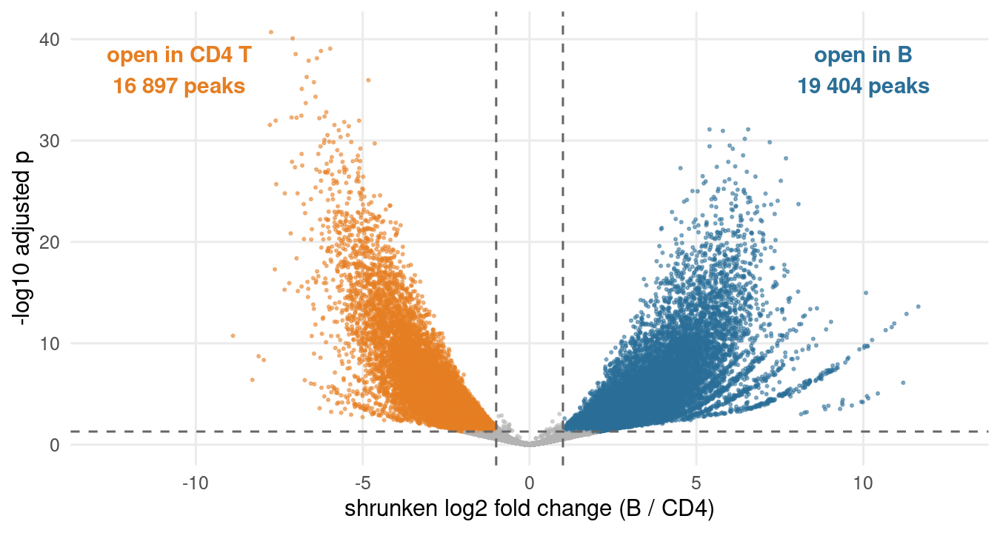
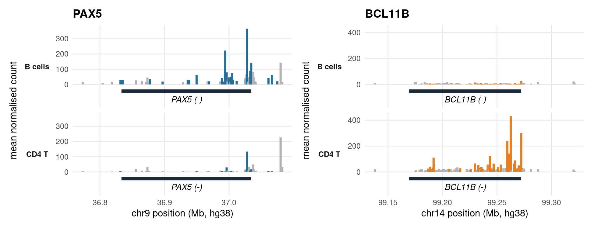
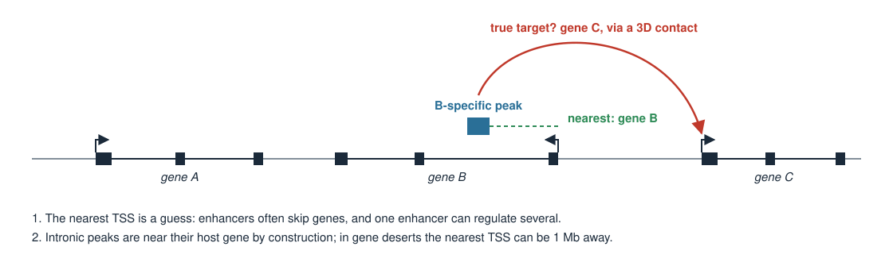
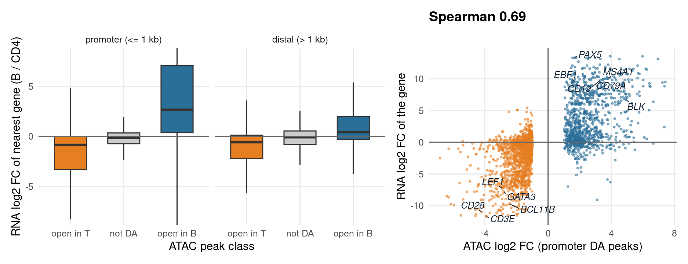
~ donor + celltype.tab <- data.frame(peak_id = names(dds), chr = seqnames(dds), start = start(dds), end = end(dds),
baseMean = res$baseMean, log2FoldChange = shr$log2FoldChange, lfcSE = shr$lfcSE,
pvalue = res$pvalue, padj = res$padj, nearest_gene = ..., dist_to_tss = ...)
tab$class <- ifelse(tab$padj < 0.05 & tab$log2FoldChange > 1, "B_up",
ifelse(tab$padj < 0.05 & tab$log2FoldChange < -1, "T_up", "ns"))
write.table(tab, "differential_peaks.tsv", sep = "\t", quote = FALSE, row.names = FALSE)padj < 0.05 and |shrunken log2 FC| > 1; B_up = more open in B cells, T_up = more open in CD4 T cells. GRCh38, 1-based coordinates, 500 bp.ns included): motif enrichment needs a background.| idea | key fact |
|---|---|
| consensus peaks | one region set for all samples; fixed-width summit peaks keep elements apart |
| counting | fragments (or Tn5 insertions) per peak; featureCounts / multicov; integer counts |
| replicates | donors are biological replicates; technical replicates are summed |
| design | ~ donor + celltype for paired samples; decide before looking at the hit count |
| normalisation | peak-based (median ratio, TMM) assumes most peaks unchanged; background bins, spike-ins otherwise |
| global change | hidden by peak-based size factors; FRiP differences can fake or hide it |
| statistics | DESeq2/edgeR exactly as for RNA-seq; filter low-count peaks; shrink fold changes |
| interpretation | DA peaks are mostly distal; nearest gene is a guess; check markers and RNA |
| this dataset | 211 824 peaks tested; 19 404 B_up, 16 897 T_up (padj < 0.05, |LFC| > 1) |
Not required reading and not examined. For those who want the primary literature.